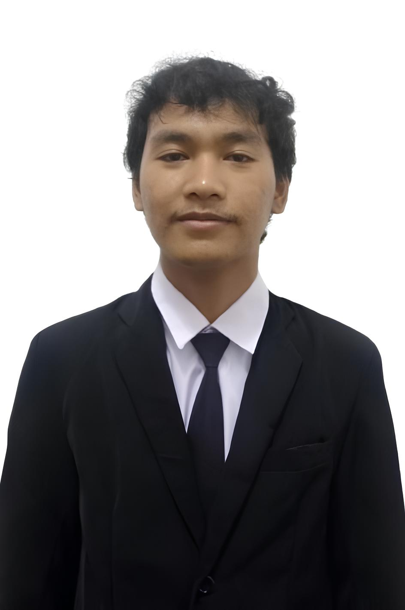

Fathir Barokah
Halo, gue Muhammad Fathir Barokah Al-Anshor, mahasiswa Sistem Informasi. Di sini gue kumpulin hal-hal yang pernah gue kerjain.
Semester 5Budi LuhurJakarta Barat

SkaterTentang
Gue mahasiswa semester 5 yang kuliah di Universitas Budi Luhur, tinggal di Cengkareng, Jakarta Barat. Hobi gue main skate.
Skill
- HTML & CSS
- Microsoft Office
- Desain
- Komunikasi
Proyek
Rangkuman Cyberpreneurship
Pertemuan 1
Pengenalan Cyberpreneurship: bentuk bisnis online, Revolusi Industri 4.0, dan 9 nilai Kebudiluhuran.
Baca rangkumanPertemuan 3
Domain dan Hosting: jenis domain, memilih nama domain, hosting, cPanel, dan Softaculous.
Baca rangkumanPertemuan 4
Membuat Content di Blog: memilih kanal, riset dan strategi konten, etika, serta Blogger.
Baca rangkumanKontak
Mau ngobrol atau kerja bareng? Kirim pesan ke:
srvexuro026@gmail.com GitHub gue